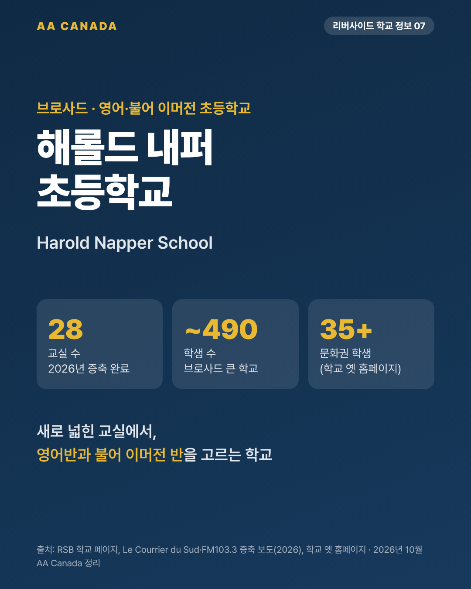

해롤드 내퍼 초등학교 (Harold Napper School)

기준일 2026-10-21 · AA Canada 정리
교육청 공통 정보는 리버사이드 교육청 공통 안내를 보세요.
한 줄 요약: 2026년 5월 증축을 마친 브로사드의 큰 초등학교. 영어반과 불어 이머전 반을 함께 운영하고, 35개 이상 문화권 학생이 다닙니다.
한눈에 보기
| 항목 |
내용 |
| 주소 |
6375 Baffin Street, Brossard, QC J4Z 2H9 |
| 연락처 |
450-676-2651 |
| 학년 |
유치원(K5)~6학년 |
| 학생 수 |
약 490명 |
| 교장 |
Valerie Forde (교감 Marie-Josée Broudehoux) |
| 수업 시간 |
8:05~14:50 |
| 데이케어 |
6:45~8:05, 14:50~18:00 (담당 450-676-7977). 다른 페이지에는 아침 종료 7:55로 표기 |
| 프로그램 |
영어 프로그램 + 불어 이머전 |
| 개교 |
1973년 11월 |
| 학군 |
브로사드 B·C·I·J·L·M·N·O 구역 (2019-20 기준, 매년 확인) |
영어·불어 비중
- 학교 옛 홈페이지 기준 학생의 약 30%가 영어반, 70%가 불어 이머전 반.
- 영어반 불어 수업: 1~2학년 주 4시간, 3~6학년 주 5시간 (AA Canada 학교 방문 상담, 2021).
- 조기유학생은 보통 영어반에 들어갑니다.
최근 소식: 2026년 증축 완료
- 2026년 5월 말 증축 개관. 퀘벡 교육부 $1,550만 투자.
- 교실 8개를 늘려 총 28개 교실. 교사 협업 공간, 소그룹 학습실 추가.
- 개관식에 퀘벡 장관, 지역구 의원, 브로사드 시장, 교육청 의장 참석.
- 배경: 2014년 무렵 정원의 125%(600명 이상)까지 차서 학군 조정 논란이 있었습니다. 이번 증축으로 공간 여유가 생겼습니다.
- 주차장 공사로 나무 10여 그루를 베어 주민 반발이 있었다는 지역 기사도 있습니다.
학교 특징
- 학부모 평가(페이스북): 추천 88% (7명)
- 1970년대부터 이어진 브로사드 대표 영어학교. 다문화 학생 구성.
AA Canada 코멘트: 이런 가족에게 추천
- 새 시설을 원하는 가족. 막 증축을 마쳐 교실 여유가 있습니다.
- 영어와 불어를 함께 고민하는 부모 동반 가족. 같은 학교 안에 영어반과 이머전 반이 있어 아이에게 맞춰 고를 수 있습니다(이머전은 불어 비중이 높아 처음 오는 아이에게는 권하지 않습니다).
- 영어만 집중하려면 굿셰퍼드와 비교해 보세요.
출처
- RSB 학교 페이지: https://www.rsb.qc.ca/school/harold-napper/
- 옛 학교 홈페이지: http://www.haroldnapper.rsb.qc.ca/H_N/sites/en/home.html
- 증축 기사: http://lecourrierdusud.ca/travaux-15-millions-ecole-harold-napper-agrandie/ · https://www.fm1033.ca/lecole-primaire-harold-napper-a-brossard-inaugure-son-agrandissement/ · https://educationnewscanada.com/article/education/level/k12/3/1202556/inauguration-of-the-harold-napper-school-expanded.html
- 나무 벌목 기사: https://www.lecourrierdusud.ca/agrandissement-de-lecole-harold-napper-des-arbres-matures-ecopent/
- 2014 과밀 기사: https://globalnews.ca/news/918817/brossard-english-school-board-re-zoning-could-force-children-to-change-schools/
- 페이스북: https://www.facebook.com/HaroldNapperSchool/
- AA Canada 학교 방문 상담 자료(2021)